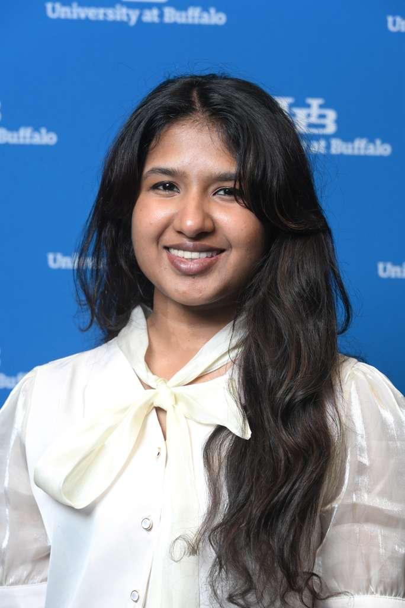
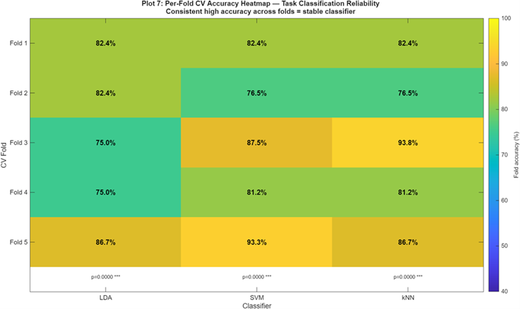
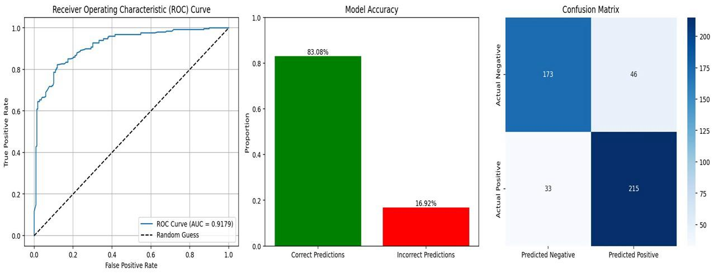
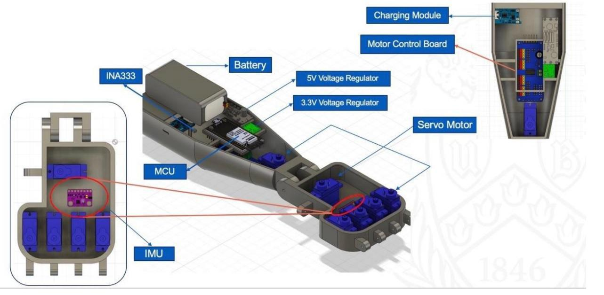

Recent Master's graduate in Biomedical Engineering from the University at Buffalo (SUNY). I decode brain signals, optimize biologics processes, and box at a state level. Ready to bring high energy and a clean signal-to-noise ratio to your engineering team.

GPA: 3.87 / 4.00
Focus on neuroengineering, clinical research, signal processing, and medical device regulations.
GPA: 3.44 / 4.00
Foundations in Biomaterials, Cell Biology, Tissue Engineering, and Bioinstrumentation.

Developed an 8-unit Wavelet NLARX pipeline mapping EMG to wrist dynamics. Demonstrated that temporal NLARX residuals serve as a unique subject-specific signal modifier, improving Extension task pass/fail prediction by 9.8% and Alternating tasks by 7.0% compared to raw EMG amplitude.

Built a classification model on high-dimensional clinical datasets utilizing state-of-the-art preprocessing and neural architectures.

Designed an embedded control interface for closed-loop upper-limb prosthetics integrating IMU, force, and muscular sensors.
Designed a biocompatible hydrogel cell-matrix scaffold to support islet cells in regenerative clinical therapy.
Chemical extraction of high-purity amorphous silica from agricultural waste (rice husk) for sustainable biomaterial applications.
Awarded for research poster presentation on "EEG-to-EMG Neural Decoding for Assistive Rehabilitation Systems."
Selected to present research on NLARX EMG-based wrist dynamic classification at the School of Engineering and Applied Sciences Academic Showcase.
Lead award given to BME GSA during presidential tenure, representing cross-department leadership excellence.
Demonstrates long-term resilience, high-stress performance, and dedication outside academic labs.
Developed and expanded graduate support pipelines, bridging BME students to industry webinars (Johnson & Johnson Career Talk) and academic resources.
Represented department interests in student government discussions regarding funding allocations for travel, publication grants, and university policies.
Active participant in Biomedical Engineering Society (UB), GradSWE (Graduate Society of Women Engineers), Indian Student Association, and UB ResFit.
Whether developing subject-specific NLARX models to classify wrist dynamics or training deep neural nets for breast cancer detection, I excel at extracting clean, actionable insights from highly complex and noisy biological datasets.
As a state-level runner-up in boxing, I have built a high threshold for stress, rigorous self-discipline, and the ability to pivot rapidly in real-time. I bring that same focus and drive directly into your engineering sprints.
As President of the BME GSA, I led our group to its first-ever Collaboration of the Year Award. I bridge the gap between technical teams, clinical investigators, and regulatory compliance stakeholders easily.